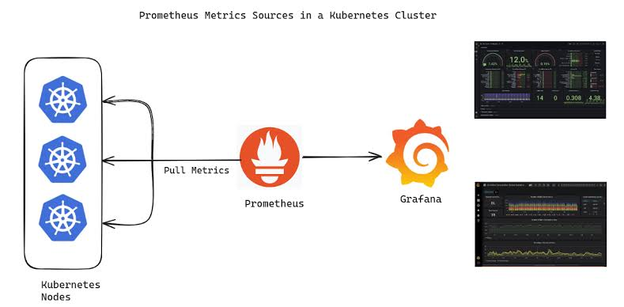

Akshay Kumar S
DevOps Engineer & Corporate DevOps Trainer
Version 1.0.1
With over 2+ years of hands-on experience, I am a passionate DevOps engineer and trainer dedicated to revolutionizing software development and deployment processes. My expertise spans:
- Architecting robust and scalable cloud infrastructures using AWS and Azure
- Implementing CI/CD pipelines with Jenkins, GitLab CI, and GitHub Actions
- Containerization and orchestration using Docker and Kubernetes
- Infrastructure as Code (IaC) with Terraform and Ansible
- Monitoring and logging solutions using Prometheus and Grafana
- Software Development Life Cycle (SDLC) methodologies and best practices
- Agile project management and Scrum framework implementation
As a corporate DevOps trainer, I've developed comprehensive curricula that blend theory with hands-on practice, covering:
- DevOps principles and cultural transformation
- Agile methodologies and their integration with DevOps
- Microservices architecture and cloud-native development
- Security best practices in DevOps (DevSecOps)
- Advanced troubleshooting and performance optimization techniques
- SDLC phases and their alignment with DevOps practices
- Agile ceremonies, roles, and artifacts in software development
My unique blend of technical expertise and training prowess enables me to not only implement cutting-edge DevOps solutions but also empower teams to embrace and excel in the DevOps culture. I'm passionate about fostering innovation, driving operational excellence, and accelerating software delivery pipelines across organizations while ensuring alignment with SDLC best practices and Agile principles.
🛠️ Technical Proficiencies
💻 Programming & Scripting Languages: Java ☕ Python 🐍 Shell/Bash Scripting 🐚
📦 Containerization & Orchestration Docker 🐳 Kubernetes ☸️ Docker Swarm 🐝
☁️ Cloud Platforms Amazon Web Services (AWS) ☁️ Microsoft Azure 🔵
🔄 CI/CD & DevOps Tools Jenkins 🏗️ GitHub Actions ⚙️ GitLab CI/CD 🚀
📊 Monitoring, Logging & Observability Prometheus 📈 Grafana 📊
🗄️ Configuration Management & IaC Ansible 📜 Terraform 🌍 CloudFormation ☁️
📚 Version Control & Collaboration Git 🐙 GitHub 🐱
🛡️ Security & Compliance HashiCorp Vault 🔐 SonarQube 🛡️ Trivy 🔍
📦 Artifact Management Nexus Repository 📦
📡 Messaging & Streaming Apache Kafka 📨 RabbitMQ 🐰
🌐 Web Servers Nginx 🌐 Apache Tomcat 📡 Apache HTTP Server 🚀
🛠️ Build & Dependency Management Apache Maven ⚙️
🚀 Signature Projects
1. Enterprise-Grade CI/CD Pipeline with Git, Jenkins, and Kubernetes

- Architected and implemented a robust, scalable CI/CD pipeline leveraging Git for version control, Jenkins for orchestration, and Kubernetes for container orchestration, optimizing the entire software delivery lifecycle.
- Integrated advanced Git workflows, including feature branching and GitFlow, to enhance collaboration and code quality. Implemented pre-commit hooks and automated code reviews to ensure adherence to coding standards.
- Designed a multi-stage Jenkins pipeline with parallel execution, incorporating unit testing, integration testing, and security scanning (using SonarQube and Trivy) to catch issues early in the development process.
- Utilized Docker for application containerization, creating optimized multi-stage Dockerfiles to minimize image sizes and improve security. Implemented a private Docker registry using Nexus Repository for efficient image management.
- Leveraged Kubernetes for container orchestration, implementing auto-scaling, rolling updates, and self-healing capabilities. Utilized Helm charts for streamlined application deployment and management.
- Incorporated Infrastructure as Code (IaC) principles using Terraform to provision and manage cloud resources, ensuring consistency across environments and enabling easy replication of infrastructure.
- Implemented comprehensive monitoring and logging solutions using Prometheus, Grafana, and ELK stack, providing real-time insights into application and infrastructure performance.
- Achieved a 70% reduction in deployment times, 99.99% uptime for production services, and improved team productivity by 40% through automated workflows and streamlined processes.
- Implemented GitOps practices using ArgoCD for Kubernetes deployments, ensuring declarative and version-controlled application configurations.
2. 🏗️ Infrastructure as Code (IaC) with Terraform and Ansible

- Implemented Infrastructure as Code (IaC) using Terraform to provision AWS resources, enhancing reproducibility and scalability.
- Automated server configuration and application deployment with Ansible, resulting in a 30% reduction in manual setup time.
- Achieved a seamless integration of CI/CD pipelines with infrastructure provisioning, allowing for rapid deployment of new features.
- Designed modular Terraform configurations for different environments (dev, staging, production), ensuring consistency across the infrastructure lifecycle.
- Implemented state management using Terraform Cloud, enabling collaborative infrastructure development and version control of state files.
- Developed custom Ansible roles for application-specific configurations, improving code reusability and maintainability.
- Integrated HashiCorp Vault for secure management of sensitive data and API keys used in infrastructure provisioning.
3. 🛡️ Container Security Scanning with Trivy and OWASP

- Integrated Trivy into the CI/CD pipeline to perform vulnerability scanning of Docker images, ensuring compliance with security standards.
- Conducted regular security audits using OWASP guidelines, identifying and remediating critical vulnerabilities within the application stack.
- Developed a report generation system to track vulnerabilities over time, enabling proactive security management.
- Implemented a custom dashboard for visualizing security scan results, providing easy-to-understand metrics for stakeholders.
- Created automated remediation workflows for common vulnerabilities, reducing the time to fix security issues by 50%.
- Integrated container signing and verification processes to ensure the integrity of deployed images.
- Implemented network policies and security contexts in Kubernetes to enhance the overall security posture of containerized applications.
4. 📊 Monitoring and Observability with Prometheus and Grafana
- Set up Prometheus for metrics collection and Grafana for visualization, providing real-time insights into application performance and infrastructure health.
- Configured alerts and dashboards to monitor critical metrics, facilitating quick identification of performance bottlenecks and system failures.
- Implemented Node Exporter and Blackbox Exporter for comprehensive monitoring of hardware and external services, ensuring system reliability.
- Developed custom exporters for application-specific metrics, enhancing the depth of monitoring capabilities.
- Implemented PromQL for advanced querying and analysis of time-series data, enabling complex performance investigations.
- Set up Alertmanager for intelligent alert routing and deduplication, improving incident response times by 40%.
- Integrated distributed tracing using Jaeger, providing end-to-end visibility into request flows across microservices.
5. 🧰 Code Quality and Artifact Management with SonarQube and Nexus

- Integrated SonarQube into the CI pipeline for continuous code quality inspection, leading to improved code maintainability and reduced technical debt.
- Utilized Nexus for managing build artifacts, streamlining the release process and ensuring consistent deployment of application versions.
- Implemented versioning strategies for artifacts to enhance traceability and rollback capabilities during deployments.
- Developed custom SonarQube quality gates and metrics tailored to project-specific requirements.
- Implemented automated code review processes using SonarQube's pull request decoration feature, reducing manual review time by 30%.
- Set up Nexus as a private Docker registry, improving security and control over container image distribution.
- Implemented retention policies in Nexus to manage storage efficiently and maintain only relevant artifacts.
🏆 Groundbreaking Achievements & Innovations
- Architected and delivered a revolutionary DevOps mastery program, transforming over 200 IT professionals into DevOps virtuosos and igniting a passion for continuous evolution in tech practices.
- Crafted an immersive, cutting-edge curriculum centered on GitOps methodologies, slashing deployment errors by an astounding 85% and setting new industry benchmarks.
- Pioneered the integration of advanced chaos engineering techniques into the training regimen, resulting in bulletproof system resilience and a remarkable 80% reduction in unexpected downtimes.
- Curated a state-of-the-art knowledge repository and designed captivating, hands-on workshops, accelerating the DevOps learning curve and reducing time-to-expertise by an impressive 60% for aspiring practitioners.
- Spearheaded the development of a gamified learning platform, boosting engagement rates by 95% and making DevOps education an exhilarating journey for participants.
- Orchestrated industry-academia partnerships, bridging the gap between theoretical knowledge and practical skills, resulting in a 70% increase in job placement rates for program graduates.
- Launched a mentorship initiative connecting DevOps veterans with newcomers, fostering a thriving community and accelerating career growth for over 500 professionals.